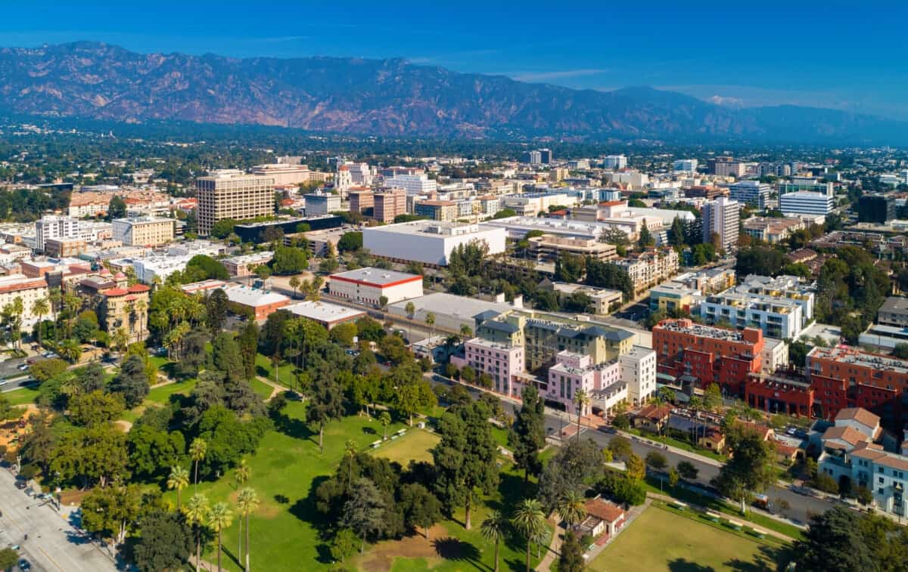

New structures in low-dimensional topology workshop 2026
American Institute of Mathematics, Pasadena CA
June 1-5, 2026
Organizers: Agustina Czenky, Cris Negron, Davide Passaro
Description
Our Simons Collaboration, New Structures in Low-Dimensional Topology, aims to bring together researchers across a wide array of disciplins to make progress on deep questions in the field. Some of these questions are directly concerned with smooth manifolds in low dimensions, while others center the formal algebraic structures which intertwine with, and emerge out of studies of manifolds and cobordisms more broadly. Our PIs, postdocs, graduate students, friends and colleagues specialize in topics ranging from gauge theory, quantum topology, categorification, 4-manifolds, and even mathematical physics, all intersecting at the juncture of low-dimensional topology.
This workshop aims to introduce graduate students and postdocs to the foundational mathematics which underlies these core areas, and to provide entry points into the leading edge of research. We will have a number of lecture series given by junior faculty which are meant, specifically, to bride the gaps between the varied areas of research which we individually specialize in. We also aim to provide participants with an opportunity to develop new mathematical connections, or return to pre-existing ones, in the hopes of sparking long-lasting collaborations in low-dimensional topology.
Speakers
TBA
Applying
We can support travel and accommodations for non-local participants. Application here.
Structure
Preliminary timetable
|
Monday |
Tuesday |
Wednesday |
Thursday |
Friday |
|
|
|
|
|
|
| 9:30-10:30 |
Speaker 1 |
Speaker 3 |
Speaker 4 |
Speaker 3 |
grad talks #2 |
| break |
|
|
|
|
|
| 11:00-12:00 |
Speaker 2 |
grad talks #1 |
Speaker 1 |
Speaker 4 |
Speaker 1 |
| Lunch |
|
|
|
|
|
| 2:00-3:00 |
Speaker 3 |
Speaker 2 |
Free! |
Speaker 2 |
Speaker 4 |
This workshop is supported by Simons Collaboration Grant No. 999367